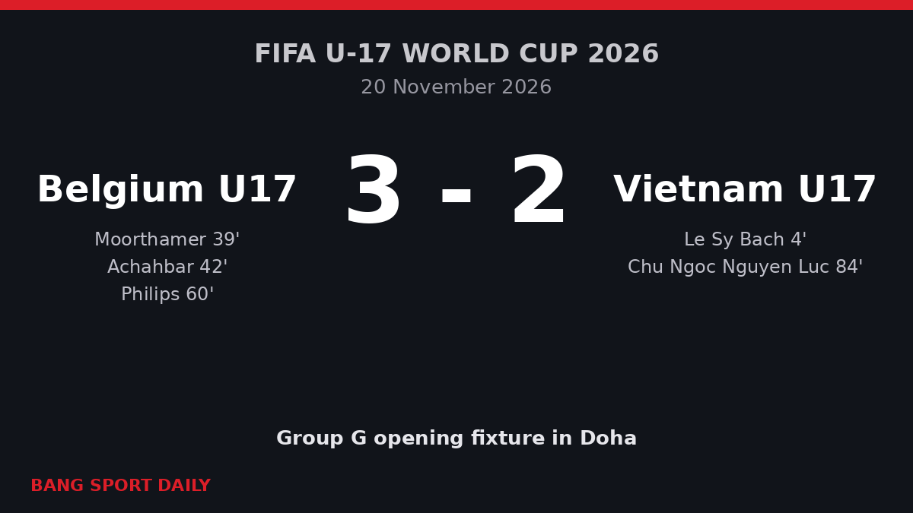

Вьетнам едва не сотворил сенсацию: яркий дебют на юношеском ЧМ и поражение 2:3 от Бельгии
Голы-шедевры Ле Ши Батя и Чу Нгок Нгуен Люка не уберегли азиатскую сборную от обидной осечки в матче с вице-чемпионами Европы в Дохе

В пятницу, 20 ноября, сборная Вьетнама в упорнейшей борьбе уступила вице-чемпионам Европы бельгийцам со счетом 2:3 в стартовом матче группы G на юношеском чемпионате мира (U-17) 2026 года в спорткомплексе Aspire Zone в Дохе. Этот поединок стал историческим дебютом Вьетнама на юношеском (U-17) чемпионате мира ФИФА, а форвард Ле Ши Бать (Le Sy Bach) и полузащитник Чу Нгок Нгуен Люк (Chu Ngoc Nguyen Luc) отметились эффектными голами-шедеврами, державшими европейцев в напряжении вплоть до финального свистка.
Дерзкий старт на арене Aspire Zone

Главный тренер вьетнамцев Криштиану Роланд (Cristiano Roland) перед стартовым свистком призвал подопечных выйти на историческую игру с верой в свои силы и хладнокровием. «В матче против сборной Бельгии U-17 я хочу лишь одного: чтобы ребята показали свой максимум и выложились без остатка, — заявил Роланд журналистам перед игрой. — Каким бы ни оказался результат, после финального свистка вся команда будет гордиться тем, что сделала на поле».
Команда моментально воплотила слова тренера в жизнь, открыв счет уже на 4-й минуте. После низовой подачи углового с левого фланга в исполнении вингера Нгуен Минь Тхюи (Nguyen Minh Thuy) нападающий Ле Ши Бать дерзко выскочил на ближнюю штангу и изящным ударом пяткой переправил мяч мимо бельгийского голкипера Маттиса Сегерса (Mattis Seghers). Этот филигранный гол сделал Ши Батя первым вьетнамским футболистом в истории, забившим на чемпионатах мира ФИФА по классическому футболу.
Бельгийский ответ перед перерывом
Подопечные Свена Верманта (Sven Vermant), приехавшие в Катар в статусе серебряных призеров чемпионата Европы U-17 2026 года и имеющие солидное преимущество в антропометрии (средний рост бельгийцев — 1,84 м против 1,75 м у вьетнамцев), постепенно прибрали мяч к ногам. На 39-й минуте Бельгия восстановила паритет: защитник Тинус Мортхамер (Tinus Moorthamer) резким ударом с острейшего угла прошил вратаря Ли Суан Хоа (Ly Xuan Hoa). Спустя три минуты плеймейкер европейцев Ксандер Диркс (Xander Dierckx) совершил слаломный проход по правому флангу и выкатил мяч под удар Кияну Ашахбару (Kiyan Achahbar), который с близкого расстояния расстрелял пустые ворота — 2:1 к перерыву.
На 60-й минуте бельгийцы упрочили лидерство: Антони Филипс (Anthony Philips) перехватил неточную передачу в центре поля, умчался на рандеву с голкипером по центру и уверенно переиграл Суан Хоа, сделав счет 3:1. Однако Вьетнам не дрогнул и на 84-й минуте вернул интригу потрясающим образом. Хавбек Чу Нгок Нгуен Люк подошел к мячу на левом угловом флажке и закрутил его прямым ударом в дальний угол ворот — классический «сухой лист»! Концовка встречи превратилась в судорожный штурм, но бельгийцам все же удалось отстоять минимальный перевес.
Расклад в группе G и дальнейшие перспективы
Итоговые 3:2 позволили сборной Бельгии набрать три очка и сравняться с Мали, переигравшей в параллельном матче чемпионов Океании из Новой Зеландии со счетом 1:0. В рамках расширенного формата мундиаля на 48 команд в 1/16 финала выходят по две лучшие сборные из 12 групп, а также восемь сильнейших команд среди занявших третьи места. Свой следующий матч в Дохе Вьетнам проведет в понедельник, 23 ноября, против Новой Зеландии, а завершит групповой этап встречей с Мали 26 ноября.